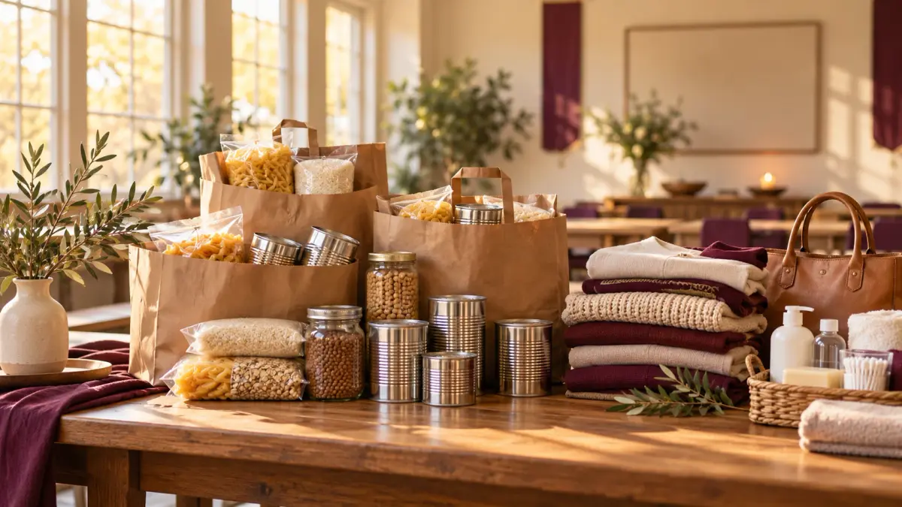

Food on the table.
Sharing food is a central part of the mission. Pantry donations can support that practical care for neighbors.
FAITH IN ACTION · LOVE YOU CAN GIVE
We share food, offer prayer, and bring clothing and everyday essentials to our community. Help put love into action, one thoughtful gift at a time.
A bag of food. A word of prayer.
A reminder that someone cares.
Serving with faith.
Giving with love.
THIS IS WHY WE SERVE
Giving food and offering prayer are at the heart of this ministry. Occasional clothing giveaways extend that love into everyday life.

Sharing food is a central part of the mission. Pantry donations can support that practical care for neighbors.
She brings people together in daily prayer, making room for faith and encouragement alongside practical support.
Occasional clothing giveaways and donations of purses and useful essentials are another way to share love.
BE PART OF THE GOOD
A bag of groceries. A gently used purse. Clothes ready for a new home.
Start with what you can share.
Unopened, shelf-stable goods like canned food, rice, pasta, and other pantry basics.
Offer food →Clean new or gently used items. Share the sizes, season, and condition.
Offer clothes →Clean, useful purses and handbags with working straps, closures, and zippers.
Offer bags →New and unopened soap, toothpaste, deodorant, and everyday care items.
Offer essentials →Useful household goods in clean, working condition. Tell us what you have.
Offer home items →Have another useful item? Describe it so the ministry can review your offer.
Tell us about it →✓ Please offer items you would feel good giving to someone you love. All offers are subject to review and separately confirmed collection arrangements.
LET’S TURN GENEROSITY INTO ACTION
Tell us what you’d like to give. Your offer will be sent privately to the ministry for review so you can discuss the next step.
Choose your items and share the quantity, sizes, and condition.
Add your email and city or area so the ministry can reach you.
Wait for a separately agreed location and time before bringing or sending items.
♡Give with dignity.
Clean, useful items communicate the care behind every gift.
THANK YOU FOR YOUR GENEROSITY
Your items and contact details are recorded for the ministry to review. Please wait for confirmed arrangements before transporting items.
FAITH FOR EVERY DAY
Alongside the work of giving, the ministry welcomes people into daily prayer. You don’t need perfect words or experience to join.
◷Daily prayer sessions
The gathering time and joining details will be shared when confirmed.
THE HEART BEHIND THE MISSION
At the center of this ministry is a woman with a mission to give food and prayer to others. She also holds occasional clothing giveaways, extending that same care through useful things people can take home.
Your generosity can become part of that work. Food, clothes, purses, and other everyday items help her reach neighbors with practical support, dignity, and encouragement.
Offer an item donation →“For where two or three are gathered together in my name,
there am I in the midst of them.”
MATTHEW 18:20 · KJV